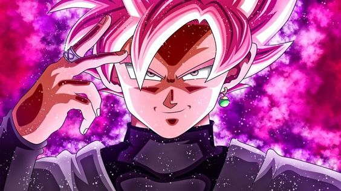
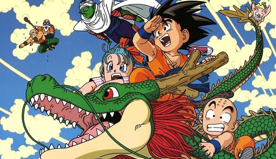
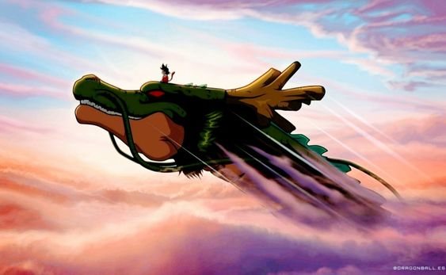
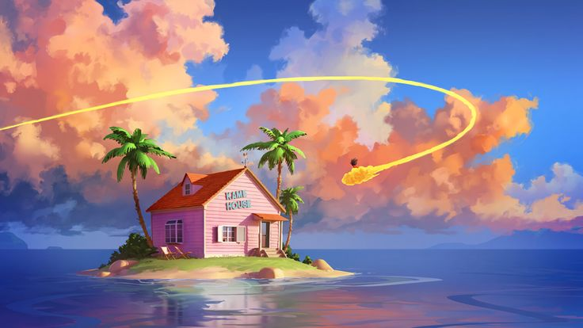
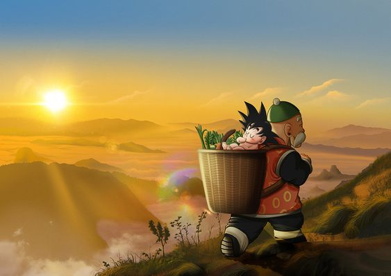

Es un manga escrito e ilustrado por Akira Toriyama. Fue publicado originalmente en la revista Shnen Jump, de la editorial japonesa Shueisha, entre 1984 y 1995. Su trama describe las aventuras de Goku, un guerrero saiyajin, experto en artes marciales que en su infancia inicia sus viajes y aventuras en las que pone a prueba y mejora sus habilidades de pelea, enfrentando oponentes y protegiendo a la Tierra de otros seres que quieren conquistarla y exterminar a la humanidad.
Conforme transcurre la trama, conoce a otros personajes que le ayudan en este propósito. El nombre de la serie proviene de unas esferas mágicas que al ser reunidas invocan a un dragón que concede deseos. En varias ocasiones resultan útiles tanto para Gokū y sus amigos como para la humanidad, aunque también son procuradas de forma constante por algunos seres malignos.
El manga tuvo 519 capítulos impresos recopilados en 42 volúmenes. Dos años después de su lanzamiento, Toei Animation estrenó una adaptación anime que abarcó aproximadamente la primera mitad de la obra.
Una vez concluida su transmisión en 1989 por el canal Fuji Television en Japón, Toei estrenó una continuación
titulada Dragon Ball Z, la cual incorporó el contenido restante del manga. Un tercer anime producido por el mismo
estudio se estrenó en 1996. Denominado Dragon Ball GT, posee un argumento inédito en cuya redacción no participó
Toriyama.
En 2015 comenzó a emitirse Dragon Ball Super en Fuji Television, anime que continúa los sucesos de Dragon Ball Z
y que cuenta con una adaptación al manga, publicada a partir de junio del mismo año en Shnen Jump.
"Dragon Ball Super: Broly" la mejor película de Dragon Ball, pues, tuvo aproximadamente el 82% de aprobación entre los fanáticos y conocedores, siendo esta una muy buena cifra para un anime. Este largometraje acumula ya más de 103 millones de dólares a nivel mundial.
Dragon Ball Super: Super Hero, un largometraje que lideró la taquilla en su debut, superando las expectativas de todos los fanáticos, pues recaudó alrededor de 21 millones de dólares en venta de boletos solo en norteamerica, y recaudó mas de 100.2 millones de dólares en todo el mundo.

Goku es el segundo hijo de Bardock y Gine, hermano menor de Raditz, nieto adoptivo de Son Gohan, esposo de Chi-Chi, padre de Son Gohan y Son Goten, a su vez también es el abuelo de Pan y ancestro de Son Goku Jr. Originalmente enviado a la Tierra como un infante volador con la misión de conquistarla. Sin emgargo terminó siendo el protector de dicho planeta y de todos sus habitantes.
Last updated 3 mins ago

Vegeta nació alrededor del año 732. Su padre, el Rey Vegeta, era el rey de los Saiyan, convirtiendo a Vegeta en su príncipe. En su juventud, Vegeta vio cómo su padre tenía que dejar su orgullo de lado frente al Dios de la Destrucción, Beerus, para proteger a su especie. Aqui entendió que de vez en cuando debemos dejar nuestro orgullo de lado para proteger lo más preciado para nosotros.
Last updated 3 mins ago

Broly es un Saiyajin que posee un poder gigantesco e incontrolable, el cual se manifiesta en toda su magnitud cuando se convierte en el Super Saiyajin Legendario. Incluso cuando apenas era un bebé su nivel de poder alcanzaba cifras inmensas que provocaban asombro y preocupación entre los de su raza.
Last updated 3 mins ago

Gohan Es el primer hijo de Son Goku y Chi-Chi, hermano mayor de Son Goten, esposo de Videl, con quien tiene una hija llamada Pan. Es mitad Saiyajin y mitad humano.
Last updated 3 mins ago

Future Trunks proviene de una versión del futuro donde la Tierra fue devastada por las despiadadas matanzas de los dos androides. Fue por los androides que Trunks tuvo que usar la máquina del tiempo de Bulma para llegar al presente y evitar que emergieran.
Last updated 3 mins ago

Black Goku es en realidad Zamasu, quien obtuvo el cuerpo del saiyajin gracias a las súper esferas del dragón. Tras ello, eliminó al guerrero que protege la Tierra. También, gracias al anillo del tiempo, entró en contacto con otra versión de sí mismo.
Last updated 3 mins ago

Gogeta es el resultado de la fusión saiyana nacida mediante la unión entre Goku y Vegeta realizando la Danza de la Fusión de los metamoranos, existiendo como la contraparte de Vegetto, su Fusión Pothala.
Last updated 3 mins ago

Freezer es un alienígena mutante, brutal dictador y líder del Imperio Galáctico del Universo 7 con el apoyo estratégico en secreto de su padre Cold.
Last updated 3 mins ago

Beerus es el Dios de la Destrucción del séptimo universo, y su zona administrativa incluye a la Tierra. l duerme desde hace varios años a varias décadas consecutivas, destruye planetas de su zona administrativa durante los pocos años que está despierto.
Last updated 3 mins ago

Caulifla es una forajida que tomó un territorio del Planeta Sadala, y creó una reputación para sí misma como una saiyajin que nadie podría derrotar, ni siquiera los miembros de las Fuerzas de Defensa de Sadala. Caulifla adoptó varios saiyajins del territorio para que fuesen sus subordinados, entre ellos Kale.
Last updated 3 mins ago

Kale es una mujer saiyajin proveniente del Planeta Sadala del Universo 6, protegida de Caulifla y una participante del Torneo de la Fuerza como parte del Equipo del Universo 6. Es considerada la Super saiyajin Legendaria de su universo.

Bardock es un saiyajin de clase baja proveniente del Planeta Vegeta del Universo 7. Pertenece al Ejército Saiyano, que está bajo el liderazgo del Rey Vegeta, y es jefe de su escuadrón durante la anexión del planeta por parte de las fuerzas coloniales del Imperio de Freeza.
Last updated 3 mins ago

Hit nació 1000 años antes del Año 779, convirtiéndolo en una leyenda viviente. Se ganaba la vida como sicario (asesino a sueldo) y jamás ha fallado en su trabajo, teniendo todo este tiempo para perfeccionar su técnica, el Salto Temporal.
Last updated 3 mins ago

Jiren es un guerrero solitario, con una motivación pura de ser el más fuerte. Este deseo nació cuando un malhechor asesinó cruelmente a sus padres, por lo que Jiren se dedicó a ser fuerte para vengarlos, pero muchos años después este mismo malhechor mató a su maestro y compañeros.
Last updated 3 mins ago

Cell es un bioandroide creado por la computadora del Dr. Gero, quien vino del futuro de la línea 3 con la intención de vengarse de Goku por haber acabado con el Ejército del Listón Rojo, y con ello el sueño de todo villano: dominar el mundo.
Last updated 3 mins ago
Last updated 3 mins ago
Last updated 3 mins ago
Last updated 3 mins ago
Last updated 3 mins ago
Last updated 3 mins ago
Last updated 3 mins ago